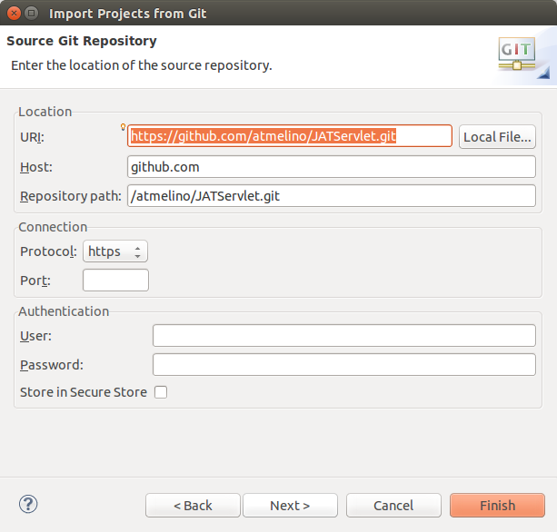

Ubuntu 14.04
Set up Web Development Tools in Eclipse
In Eclipse, select "Install new software"
under "Web, XML, Java EE Development and OSGi Enterprise Development"
select:
- Eclipse Java EE Developer Tools
- Eclipse Java Web Developer Tools
- Eclipse Web Developer Tools
- JST Server Adapters
- JST Server Adapters Extensions

Set up Tomcat Server Target in Eclipse
Go to Window->Preferences->Server->Runtime Environment and click on Add
Select Tomcat 7 and click Next
Point to the Tomcat installation directory and click on Finish

Import the Code
In the Project Explorer, right-click and select import:

Select import from Git:
As source, select URI:

Enter the github repository URI
https://github.com/atmelino/JATServlet.git
and your developer credentials.

Leave the branch selection on master and click on Next.

Enter the location of the local copy.
Now leave the selection on new project wizard and click on Finish.

make sure to create a "Dynamic Web Project"
Enter the name of the project and click on Finish.
The target runtime should be Tomcat 7.
Refer to this page for more information:
Java web development with Eclipse WTP -
Tutorial